Operasi Virtual Machine (VM) Spesifikasi hardware, pembuatan VM dari ISO, clone & export, hingga optimasi driver Sangfor vmTools.
Modul belajar interaktif dari 43 slide training resmi: memahami konfigurasi High Availability (HA) pada datastore, alokasi processor NUMA dan RAM hingga 4 TB, variasi virtual disk (thin, dynamic, pre-allocate, RDM, shared disk), alur Create VM baru, 3 metode clone, prosedur import/export aman, serta instalasi dan troubleshooting Sangfor vmTools.
Target modul: setelah menyelesaikan modul ini, Anda mampu merancang spesifikasi hardware VM secara optimal, mengeksekusi instalasi OS baru dari ISO, melakukan clone dan export tanpa risiko kerusakan data, serta memaksimalkan performa I/O menggunakan driver paravirtualisasi vmTools.
Run Location
Node-01 / <Auto>
Load balancing cluster otomatis
Clone Engine
Instant / Link / Full
Replikasi cepat VM produksi
Lima kompetensi utama yang akan Anda kuasai.
Setelah menyelesaikan modul ini, Anda memiliki keahlian praktis dalam mengonfigurasi dan mengoperasikan virtual machine di lingkungan Sangfor HCI.
Konfigurasi Hardware & Fitur Lanjutan VM. Menentukan alokasi vCPU, NUMA scheduler, memory huge-page hingga 4 TB, jenis disk (thin/dynamic/pre-allocate/RDM/shared), interface NIC Virtio, dan BIOS mode (SeaBIOS vs UEFI).
Alur Pembuatan VM Baru dari Nol. Menguasai langkah Create VM pada menu Compute, pengisian spesifikasi dasar, pemilihan ISO instalasi, hingga instalasi guest OS Windows dan Linux.
Perbandingan 3 Metode Clone VM. Memahami perbedaan arsitektur Instant Full Clone, Link Clone, dan Full Clone beserta syarat cluster (minimal 3 node) dan jenis datastore yang didukung.
Prosedur Import dan Export VM. Mengimpor berkas image dari platform luar dan menjalankan prosedur ekspor VM secara aman dengan mematikan VM terlebih dahulu demi menjaga konsistensi data disk.
Instalasi & Optimasi Sangfor vmTools. Menginstal paket vmTools pada sistem operasi Windows dan Linux untuk mengaktifkan driver Virtio, fitur CPU/RAM hot-add, reboot otomatis saat fault, dan pemantauan metrik dari platform.
Empat bagian modul Operasi Virtual Machine.
Struktur materi disusun bertahap mulai dari pemahaman opsi parameter hardware, alur pembuatan VM baru, operasi salinan (clone/export), hingga pemasangan agen optimasi.
Konfigurasi Dasar VM
Slide 3–25 · Pengaturan High Availability (HA), pemilihan datastore virtual storage, storage policy QoS/replica, Run Location, processor NUMA, RAM 4 TB, jenis disk, NIC Virtio, dan opsi Advanced.
Buka pembahasanCara Membuat VM Baru
Slide 26–32 · Langkah Create VM pada menu Compute, pengaturan grup & tag, pengunggahan dan pemasangan file ISO, proses instalasi OS guest, serta tabel kompatibilitas OS.
Buka alurOperasi VM Lainnya
Slide 33–38 · Operasi siklus hidup: Instant Full Clone vs Link Clone vs Full Clone, regenerasi MAC/UUID, import berkas OVF/OVA/qcow2, dan ekspor VM dengan aturan wajib power off.
Buka operasiSangfor vmTools
Slide 39–43 · Agen paravirtualisasi: fungsi driver Virtio NIC/disk, pelaporan metrik CPU/RAM/IP, aktivasi hot-add, prosedur instalasi di Windows dan Linux, serta kesimpulan slide 43.
Buka vmToolsEmpat tahapan siklus hidup Virtual Machine di HCI.
Setiap virtual machine di cluster Sangfor HCI melalui empat fase terstruktur, dari perencanaan konfigurasi awal hingga pemeliharaan dan replikasi.
Perencanaan Hardware
Tentukan vCPU, RAM, jenis disk (thin/dynamic), datastore aSAN, dan aktifkan HA dengan Run Location <Auto>.
Slide 4–25Penyebaran & OS
Menu Compute > New > Create VM, pasang file ISO guest OS, tentukan boot mode (SeaBIOS/UEFI), dan jalankan instalasi OS.
Slide 26–30Pasang vmTools
Pasang Sangfor vmTools di Windows/Linux untuk mengaktifkan driver paravirtualisasi Virtio, CPU hot-add, dan monitoring platform.
Slide 31 & 39–42Replikasi & Proteksi
Gunakan Instant/Link Clone untuk memperbanyak VM secara cepat; terapkan disk snapshot dan export aman (power off).
Slide 34–38Prinsip operasional: Virtual machine tanpa Sangfor vmTools hanya berjalan menggunakan driver emulasi standar (kinerja lambat, tanpa kemampuan hot-add, dan alamat IP tidak terbaca oleh konsol manajemen). Instalasi vmTools adalah langkah wajib pertama setelah OS terpasang.
Konfigurasi Dasar Virtual Machine
Bedah tuntas parameter komputasi, high availability, alokasi memori, format partisi disk (thin vs dynamic vs RDM), kartu jaringan Virtio, dan pengaturan lanjutan di tab Advanced.
High Availability, Datastore, dan Lokasi Eksekusi VM.
Slide 4 sampai 7 membahas parameter fondasi ketersediaan tinggi (High Availability) dan penempatan virtual machine di atas storage terdistribusi Sangfor HCI.
High Availability (HA) Failover
Fitur High Availability menjamin virtual machine secara otomatis dipindahkan dan dinyalakan kembali pada node lain yang sehat jika node tempat VM berjalan mengalami kegagalan hardware.
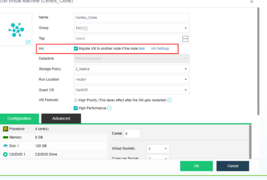
- Syarat shared storage: HA hanya dapat aktif jika datastore VM berada pada media penyimpanan bersama (Virtual Storage aSAN, iSCSI, atau Fibre Channel). Local storage tidak didukung untuk HA.
- Opsi aktivasi: centang
Migrate VM to another node if the node fails. - Syarat Run Location: Run Location VM wajib diset ke <Auto> agar failover otomatis dapat memilih node target secara dinamis.
Datastore & Storage Policy aSAN
Menentukan lokasi penyimpanan citra disk virtual machine dan kebijakan proteksi salinan data blok.
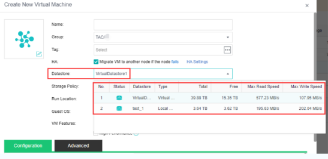
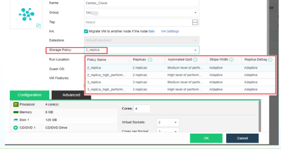
- Nama default datastore: datastore virtual bawaan bernama
VirtualDatastore1. Jika terdapat beberapa datastore, sistem otomatis memilih datastore yang paling baru dibuat. - Storage Policy (Slide 06): menentukan jumlah salinan replika (2-Copy atau 3-Copy) dan batas QoS performa I/O. Hanya aktif jika datastore bertipe Virtual Datastore (aSAN). Dibuat di menu
Storage > Virtual Storage > Storage Policy.
Run Location (Node Tempat VM Berjalan)
Menentukan host server fisik spesifik di dalam cluster tempat virtual machine akan dieksekusi.
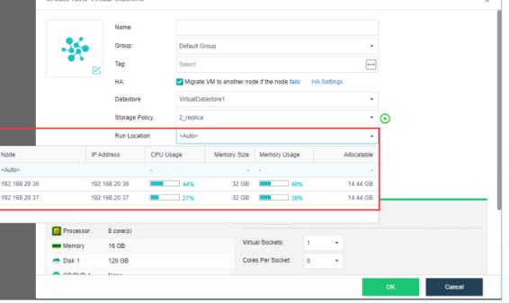
- Opsi <Auto> (Disarankan): platform HCI secara otomatis memilih node yang memiliki kapasitas resource CPU dan RAM paling lapang, serta memungkinkan failover HA tanpa intervensi manual.
- Penetapan Host Manual: jika memilih node spesifik, pastikan host tersebut memiliki spesifikasi prosesor dan memori yang memadai untuk beban kerja aplikasi Anda.
Guest OS & VM Features
Pemilihan sistem operasi guest dan profil performa prioritas tinggi.
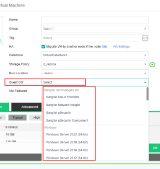
- Distribusi Linux khusus: jika distro Linux yang diinstal tidak tercantum pada daftar, pilih opsi Linux 3.x/2.6 kernel 64-bit.
- High Priority (Slide 09): resource CPU/RAM dijamin tidak direbut VM lain, fitur memory reclaiming dimatikan, dan saat failover HA VM ini dinyalakan paling awal.
- High Performance (Slide 09): mengaktifkan High Priority, huge-page memory, CPU pass-through host, paravirtualized clock, dan pre-allocate disk untuk database enterprise.
Kalkulator Alokasi vCPU, RAM, dan Overcommit Ratio.
Gunakan simulator ini untuk memproyeksikan alokasi vCPU dan RAM terhadap kapasitas fisik server sebelum menjalankan VM produksi.
Simulator Kapasitas Komputasi VM (vCPU & RAM)
Geser parameter untuk melihat rasio overcommit dan ketersediaan memori fisik pada host.
Kondisi Ideal: Alokasi CPU berada pada rasio 1:1 tanpa overcommit. RAM host menyisakan ruang lebih dari 30% untuk kebutuhan hypervisor aSV.
Optimalisasi NUMA, Huge-Page, dan Batas Skalabilitas 4 TB.
Slide 10 dan 11 merinci kontrol mendalam arsitektur komputasi virtual machine untuk memaksimalkan performa database dan aplikasi kritis.
Konfigurasi Processor (vCPU)
Jumlah core virtual machine dibatasi oleh jumlah core fisik CPU pada host server.
| Fitur Processor | Fungsi & Kegunaan | Catatan Implementasi |
|---|---|---|
| NUMA Scheduler | Menyeimbangkan alokasi memori lokal ke core CPU terkait | Meningkatkan performa akses memori hingga 30% |
| CPU Exclusive Mode | Mengunci core fisik host khusus untuk VM terkait | Tidak dapat di-share ke VM lain; untuk app ultra-kritis |
| Use CPU from Host | Meneruskan instruksi set CPU fisik (AVX/AVX2) ke VM | VM hanya bisa live migrate ke node dengan tipe CPU identik |
| Para-virtualized Clock | Sinkronisasi waktu presisi tinggi hypervisor | Sangat disarankan untuk VM database Windows |
| CPU Hot Add | Menambah jumlah vCPU saat VM sedang menyala | Wajib terpasang Sangfor vmTools |
| Clock Speed Limit | Membatasi kecepatan clock VM (MHz) | Mencegah 1 VM memonopoli resource host |
Konfigurasi Memory (RAM)
Kapasitas memori virtual machine mendukung hingga 4 TB per VM untuk kebutuhan analitik big data dan database besar.
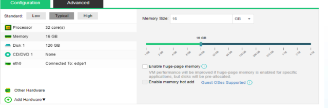
- Enable Huge-Page Memory: mengalokasikan memori dalam blok besar (2 MB/1 GB) untuk mempercepat translasi TLB pada database SQL Server atau Oracle. Catatan: memory tidak dapat di-swap atau di-balloon saat opsi ini aktif.
- Enable Memory Hot Add: memungkinkan penambahan RAM tanpa mematikan VM. Memerlukan Sangfor vmTools aktif di dalam guest OS.
Format partisi disk, Space Reclamation, dan RDM Disk Fisik.
Slide 12 sampai 15 menjelaskan empat metode alokasi disk virtual machine, penghematan kapasitas dengan pembersihan blok kosong, dan penggunaan shared disk.
Thin Provisioning
Kapasitas disk fisik dialokasikan bertahap sesuai penulisan data di dalam VM. Menghemat ruang storage, cocok untuk beban kerja umum.
Maksimal 64.512 GB per diskDynamic Provisioning
Mencapai performa hingga 90% pre-allocated disk dengan efisiensi ruang seperti thin. Mensyaratkan cluster minimal 3 node aSAN.
Performa tinggi + efisiensi ruangPre-allocating
Seluruh ruang disk dialokasikan seketika di awal. Menghasilkan performa I/O terbaik tanpa jeda alokasi, cocok untuk database produksi.
Performa I/O maksimalPhysical Disk (RDM)
Raw Device Mapping memetakan disk fisik langsung ke VM (misal instalasi guest OS khusus SSD), tetap terintegrasi dalam manajemen platform.
Akses langsung ke disk fisikSpace Reclamation & Existing Disk (qcow2)
Fitur pengembalian ruang storage dan pengelolaan berkas citra disk virtual format qcow2.
- Space Reclamation (HCI 6.8.0+): secara otomatis mengembalikan kapasitas blok disk yang sudah dihapus di dalam VM kembali ke pool Virtual Storage aSAN.
- Syarat Space Reclamation: tipe disk wajib Thin atau Dynamic Provisioning, cluster aSAN minimal 3 node, dan pengontrol disk Virtio.
- Ketentuan Linux vs Windows: pada Windows dapat diaktifkan pada disk lama maupun baru. Pada Linux wajib menambahkan parameter
mount -o discardsaat mounting partisi. - Format Berkas qcow2: format virtual disk asli Sangfor HCI adalah
qcow2. Berkas disk Hyper-V (vhd/vhdx) otomatis dikonversi ke qcow2 saat di-attach. Lokasi default://All datastores/VirtualDatastore1/images/cluster/.
Shared Disk untuk Lingkungan Multi-VM Cluster
Penyimpanan virtual bersama yang dapat diakses secara simultan oleh lebih dari satu virtual machine.
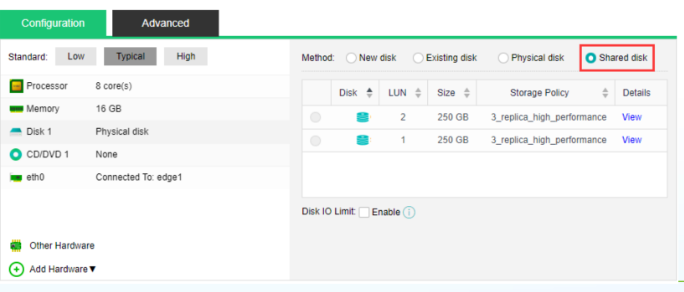
Ketentuan Shared Disk: Dibuat di menu Virtual Storage > Shared Disk. Khusus untuk data aplikasi cluster (Oracle RAC, Microsoft CSV). Sistem operasi VM tidak boleh diinstal di atas shared disk.
NIC Virtio, BIOS UEFI GPT, dan Opsi Keamanan Advanced.
Slide 16 sampai 25 merangkum opsi perangkat keras tambahan (jaringan, grafis, periferal) dan pengaturan keamanan pada tab Advanced konfigurasi VM.
NIC, Grafis, dan BIOS Option
- Pilihan Tipe NIC (Slide 17):
- Virtio: adapter paravirtualisasi berkecepatan tinggi, aktif otomatis setelah vmTools terpasang (disarankan untuk produksi).
- Intel E1000: kompatibilitas standar untuk Linux dan Windows 7 / 2008 ke atas.
- Realtek RTL8139: untuk sistem operasi lawas Windows XP dan Windows 2003.
- Format MAC Address: dibuat otomatis dengan format
FE:FC:FE:XX:XX:XXdan mendukung pembatasan bandwidth traffic (1.000 kbps s.d. 20.000 Mbps). - Tipe Grafis & BIOS (Slide 18 & 19): SeaBIOS (Cirrus) untuk Legacy MBR, atau UEFI BIOS (QXL) untuk partisi skema GPT dan disk berukuran di atas 2 TB.
- Batas Controller IDE (Slide 20): secara default controller IDE hanya mendukung maksimal 4 perangkat (termasuk disk dan CD-DVD). Pasang vmTools untuk memperbanyak kapasitas disk controller SCSI/Virtio.
Fitur Keamanan & Tab Advanced
- Boot Order (Slide 21): tentukan prioritas booting antara Hard Disk, CD/DVD, atau PXE Network. Dapat mengatur BIOS POST Time agar teknisi bisa menekan tombol
F12saat menyalakan VM. - Lifecycle & Hostname (Slide 22): masa berlaku VM dapat diset Immortal (permanen) atau memiliki batas tanggal kedaluwarsa dengan alarm otomatis. Hostname dapat diubah langsung dari platform (butuh vmTools).
- Power On & Reboot if Fault (Slide 23): Power On at Node Startup otomatis menyalakan VM pasca listrik pulih. Reboot if Fault Occurs me-restart VM otomatis saat terjadi blue screen atau kernel panic (butuh vmTools).
- Enkripsi Disk AES-256 (Slide 24): mengamankan data disk VM dengan enkripsi kelas militer AES-256. Perhatian: VM yang terenkripsi tidak dapat di-clone, diekspor, atau dijadikan template.
- VM Escape Detection (Slide 25): memantau dan mencatat anomali perilaku jika ada upaya instruksi berbahaya keluar dari guest OS menuju hypervisor.
Cara Membuat VM Baru
Langkah demi langkah: pembuatan VM melalui menu Compute, pengisian spesifikasi dasar, pemasangan berkas ISO, proses instalasi OS guest, dan verifikasi tabel kompatibilitas.
Alur pembuatan VM baru dari menu Compute hingga OS aktif.
Slide 27 sampai 30 menyajikan panduan operasional membuat virtual machine baru dari berkas citra ISO, menentukan parameter identitas, hingga menyelesaikan proses instalasi sistem operasi.
Akses Menu Compute > New > Create VM
Buka web console Sangfor HCI, navigasikan ke menu Compute, klik tombol dropdown New, lalu pilih Create VM untuk memulai pembuatan mesin virtual berbasis file ISO.
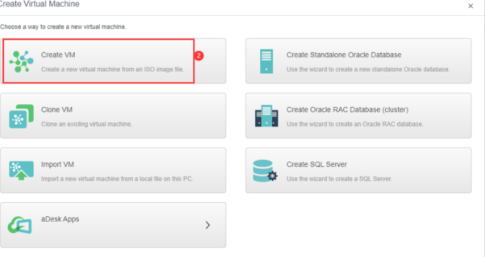
Pilihan templat database bawaan: Menu dropdown New juga menyediakan opsi otomatis untuk Create Standalone Oracle Database, Create Oracle RAC, dan Create SQL Server dengan arsitektur optimal bawaan Sangfor.
Konfigurasi Spesifikasi & Identitas VM
Lengkapi formulir spesifikasi virtual machine:
- Identitas: isi Name, masukkan ke dalam Group, dan tambahkan Tag untuk memudahkan pencarian di cluster besar.
- Ketersediaan: centang High Availability (HA) dan pastikan Datastore mengarah ke
Virtual Storage. - Distribusi Beban: pilih Storage Policy (2-Copy / 3-Copy) dan atur Run Location ke
<Auto>. - Tab Configuration: tentukan alokasi vCPU, kapasitas RAM, tipe disk (Dynamic/Thin), dan kartu jaringan NIC.
Pemasangan Berkas ISO & Boot Installer
Setelah entri VM terbuat, klik tombol Install OS pada panel ringkasan VM. Pilih berkas ISO instalasi dari repositori datastore yang tersedia.
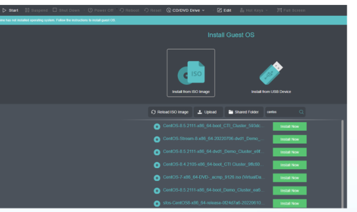
Unggah ISO lokal: Jika berkas ISO belum tersedia di storage HCI, klik tombol Upload pada jendela dialog untuk mengunggah berkas image dari komputer administrator ke datastore cluster.
Jalankan Proses Instalasi Sistem Operasi
Buka VNC Console pada web console Sangfor HCI. Layar instalasi sistem operasi akan muncul persis seperti melakukan instalasi pada server fisik.
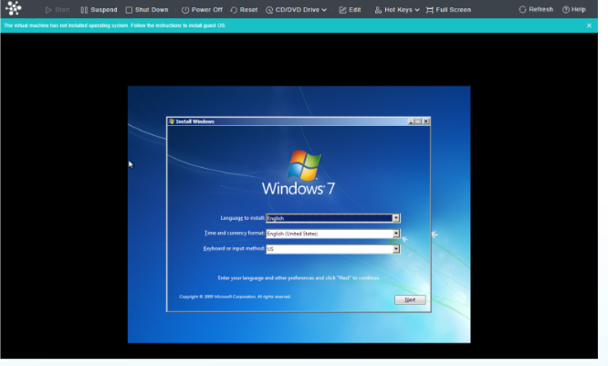
Selesaikan wizard pemartisian disk, pembuatan akun administrator, dan konfigurasi zona waktu hingga sistem operasi masuk ke desktop/shell.
Pemasangan Wajib Sangfor vmTools
Setelah guest OS berhasil melakukan boot pertama kali, segera pasang Sangfor vmTools untuk mengaktifkan driver akselerasi Virtio, integrasi konsol mouse, dan pelaporan metrik sistem.
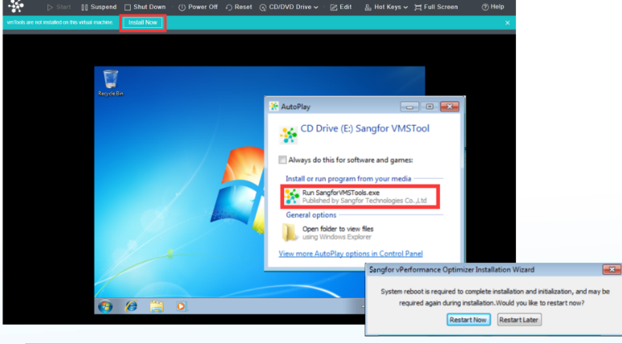
Matriks dukungan sistem operasi untuk Sangfor vmTools.
Slide 32 menyajikan daftar kompabilitas resmi guest OS terhadap agen vmTools. Periksa tabel ini sebelum menentukan arsitektur sistem operasi aplikasi Anda.
| Guest OS / Distribusi | Status Dukungan vmTools | Catatan Teknis & Rekomendasi |
|---|---|---|
| Windows 10, 11, Server 2008 R2 s.d. 2022 | Didukung Penuh | Instalasi otomatis via CD drive virtual atau setup wizard eksekusi langsung. |
| Linux Enterprise (RHEL / CentOS / Ubuntu / Debian) | Kernel ≥ 2.6 Didukung | Menggunakan installer shell script; wajib menyertakan compiler / kernel-headers. |
| Windows 2003 | SP2 ke Bawah Saja | Hanya mendukung Windows Server 2003 SP2 ke bawah. Versi di atas SP2 tidak didukung. |
| Windows 2000 | Tidak Didukung | Tidak memiliki paket driver vmTools kompatibel; gunakan emulasi IDE / Realtek. |
| Windows XP SP3 | Tidak Didukung | Windows XP Service Pack 3 resmi tidak didukung untuk instalasi vmTools. |
| Distribusi Linux Kernel < 2.6 | Tidak Didukung | Arsitektur kernel lawas tidak memiliki modul paravirtualisasi virtio internal. |
| FreeBSD / OpenBSD | Tidak Didukung | Keluarga sistem operasi BSD resmi tidak didukung untuk paket Sangfor vmTools. |
Solusi untuk OS non-vmTools: Jika VM harus menjalankan OS lawas yang tidak didukung vmTools, gunakan pengontrol disk IDE dan adapter jaringan Intel E1000 atau Realtek RTL8139 untuk kompatibilitas emulasi perangkat keras.
Operasi VM Lainnya: Clone, Import & Export
Mendalami 3 metode clone (Instant Full Clone, Link Clone, Full Clone), alur duplikasi cepat, prosedur impor berkas citra, dan aturan keselamatan ekspor VM.
Duplikasi cepat, migrasi image luar, dan prosedur ekspor aman.
Slide 33–38 merinci tiga operasi penting dalam pemeliharaan virtual machine: duplikasi mesin virtual menggunakan teknik cloning, membawa image mesin virtual dari platform eksternal (import), serta pengarsipan VM (export).
Instant Full Clone
Duplikasi cepat mandiri, disk terpisah penuh; butuh minimal 3 node & aSAN.
Cluster ≥ 3 NodeLink Clone
Sangat hemat kapasitas disk karena menginduk ke disk master VM.
Cluster ≥ 3 NodeFull Clone Tradisional
Salinan lengkap independen, dapat dijalankan di semua jenis datastore.
Bebas NodeExport VM Aman
Ekspor citra qcow2 dan metadata; VM wajib dimatikan (power off) lebih dulu.
Power Off WajibKeuntungan operasional clone: Mempercepat deployment lingkungan pengujian (staging/development) atau penambahan server aplikasi identik tanpa perlu mengulangi instalasi OS dan paket perangkat lunak dari awal.
Eksplorasi langkah kerja Clone, Import, dan Export VM.
Pilih tab di bawah untuk mempelajari ketentuan clone, perbandingan arsitektur clone, alur eksekusi, serta prosedur impor dan ekspor VM.
Karakteristik & Ketentuan Operasi Clone VM
Fitur clone memungkinkan administrator membuat satu atau beberapa salinan virtual machine baru secara sekaligus dari mesin virtual sumber yang ada.
| Aspek Teknis | Aturan Platform Sangfor HCI | Catatan Lapangan |
|---|---|---|
| Spesifikasi VM | Sama persis dengan VM asli (CPU, RAM, ukuran disk, BIOS) | Spesifikasi dapat disesuaikan kembali setelah clone selesai |
| Alamat MAC Jaringan | Otomatis dibuatkan MAC address baru yang unik | Mencegah konflik alamat MAC di jaringan fisik switch |
| Status Kartu Jaringan (NIC) | Nonaktif Secara Default | NIC diputus (disconnected) agar tidak bertabrakan IP dengan VM sumber |
| UUID Mesin | Dapat di-regenerasi otomatis melalui opsi UUID Generator | Wajib diganti jika VM menjalankan virtual appliance berlisensi per-UUID |
| Sumber Duplikasi | Bisa dari VM yang sedang berjalan, snapshot, atau file backup | Fleksibel, tidak mewajibkan VM dimatikan terlebih dahulu |
| Kuncian Operasional | Selama proses clone, operasi power on/off/backup/snapshot dinonaktifkan | Tunggu hingga status progres clone mencapai 100% |
Perbandingan 3 Metode Clone VM di Sangfor HCI
Sejak Sangfor HCI 6.0.1, mekanisme pembuatan salinan VM dibagi menjadi tiga teknologi dengan karakteristik arsitektur penyimpanan yang berbeda:
| Kriteria Evaluasi | Instant Full Clone | Link Clone | Full Clone Tradisional |
|---|---|---|---|
| Syarat Jumlah Node | Minimal 3 Node | Minimal 3 Node | Bebas (1, 2, atau multi-node) |
| Syarat Tipe Datastore | Hanya Virtual Storage (aSAN) | Hanya Virtual Storage (aSAN) | Semua datastore (Virtual / Local / iSCSI / FC) |
| Kecepatan Duplikasi | Sangat Cepat | Instan (Detik) | Relatif Lambat (menyalin seluruh blok fisik) |
| Konsumsi Ruang Disk | Kapasitas penuh sesuai VM asli | Sangat Hemat (hanya delta delta tulis) | Kapasitas penuh 100% dialokasikan |
| Independensi File Disk | Mandiri Penuh | Menginduk ke disk VM master asli | Mandiri Penuh |
| Skenario Rekomendasi | Server produksi mandiri cepat | Lab pelatihan, VDI, testing massal | Penyalinan lintas storage atau cluster 2-node |
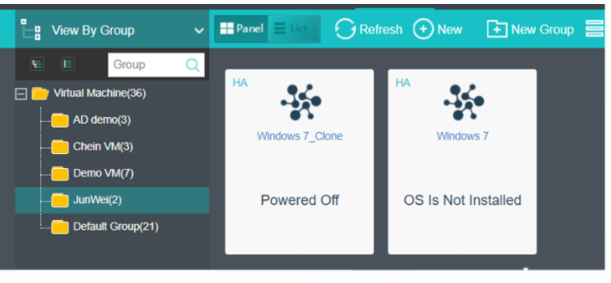
Dua Cara Mengeksekusi Clone VM
Platform menyediakan dua alur navigasi untuk menjalankan proses cloning VM:
- Cara 1 (Menu Utama): Buka
Compute > New > Clone VM, pilih VM sumber dari daftar yang ditampilkan, tentukan jumlah salinan yang ingin dibuat, lalu klik konfirmasi. - Cara 2 (Aksi Kontekstual VM): Pada daftar VM, pilih VM target, klik tombol
More > Clone. VM sumber tidak wajib dimatikan (bisa online clone). - Langkah Pasca Clone: Nyalakan VM hasil clone, buka pengaturan jaringan di dalam guest OS untuk menetapkan alamat IP baru, lalu aktifkan kembali konektor kartu jaringan virtual pada menu konfigurasi hardware HCI.
Mengimpor Mesin Virtual dari Luar Platform (Import VM)
Fitur Import VM digunakan untuk membawa virtual machine dari platform eksternal atau berkas image cadangan ke dalam cluster Sangfor HCI.
Compute > New > Import VM
Pilih berkas OVF, OVA, atau citra disk
Tentukan Group, HA, dan Datastore
Pilih Storage Policy dan Run Location
Klik Import dan tunggu konversi selesai
Setelah import selesai, periksa driver kartu jaringan dan disk di dalam guest OS; instal atau perbarui Sangfor vmTools agar performa optimal.
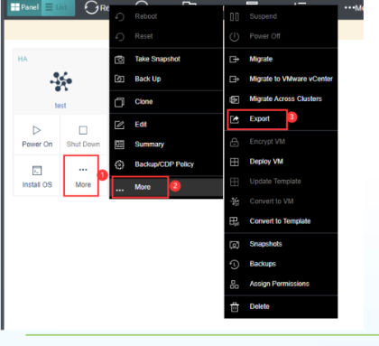
Prosedur Ekspor Virtual Machine (Export VM)
Ekspor VM menghasilkan berkas paket mandiri yang berisi citra virtual disk qcow2 beserta file konfigurasi XML/metadata mesin.
- Langkah ekspor: Buka menu
Compute, pilih VM yang akan diekspor, buka menu pull-downMore, lalu pilihExport. - Penyimpanan berkas: Tentukan lokasi penyimpanan tujuan (bisa diunduh langsung lewat browser atau disimpan ke datastore eksternal/share folder).
Peringatan Kritis (Slide 38): Virtual Machine harus dimatikan (power off) terlebih dahulu sebelum diekspor! Mengekspor VM dalam kondisi menyala akan ditolak oleh sistem untuk mencegah korupsi data disk qcow2 akibat operasi I/O yang masih aktif.
Sangfor vmTools & Optimasi Paravirtualisasi
Driver akselerasi Virtio untuk disk dan NIC, integrasi pelaporan CPU/RAM/IP ke konsol web, aktivasi CPU & Memory Hot Add, serta panduan instalasi Windows dan Linux.
Agen paravirtualisasi penentu performa dan integrasi konsol.
Slide 40–42 menjelaskan mengapa Sangfor vmTools adalah komponen paling esensial yang harus dipasang di setiap virtual machine pasca instalasi sistem operasi.
Fungsi Utama Sangfor vmTools
Sangfor vmTools bertindak sebagai jembatan komunikasi langsung antara kernel guest OS dengan hypervisor aSV:
- Driver Paravirtualisasi Virtio: menggantikan emulasi perangkat keras standar dengan driver native berkecepatan tinggi untuk antarmuka jaringan (NIC) dan kontroler hard disk. Mengurangi beban siklus CPU host hingga 40%.
- Telemetri & Pelaporan Status: mengirimkan data metrik real-time ke web console HCI: persentase utilisasi CPU, konsumsi RAM aktif, disk I/O throughput, alamat IP internal guest OS, dan kecepatan lalu lintas traffic jaringan.
Fitur Lanjutan yang Diaktifkan
Berbagai fitur otomatisasi platform HCI hanya dapat berfungsi jika vmTools telah aktif di dalam VM:
Tambah vCPU dan RAM tanpa mematikan VM
Ubah IP address VM langsung dari konsol HCI
Restart otomatis saat terjadi BSOD / kernel panic
Kecualikan swap/pagefile agar backup lebih cepat
Prosedur pemasangan vmTools di Windows dan Linux.
Instalasi vmTools di Windows
Pada guest OS Windows, instalasi dilakukan melalui wizard grafis installer:
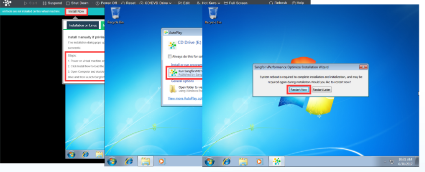
- Buka drive CD-ROM virtual atau jalankan AutoPlay.
- Jalankan berkas
setup.exedan ikuti instruksi hingga wizard selesai. - Wajib Restart: lakukan reboot VM agar driver Virtio dimuat sempurna ke kernel Windows.
Instalasi vmTools di Linux
Pada guest OS Linux, instalasi dilakukan melalui terminal shell script:
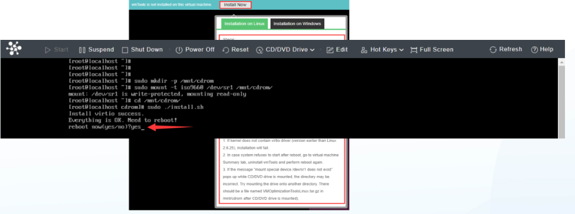
- Mount drive CD virtual vmTools ke folder lokal (misal:
mount /dev/cdrom /mnt). - Masuk ke direktori mount dan jalankan skrip instalasi:
./install.sh. - Pastikan terminal menampilkan notifikasi 'Everything is OK', lalu lakukan reboot sistem.
Checklist Verifikasi Kesiapan Operasional VM
Centang sepuluh item evaluasi sebelum merilis virtual machine ke lingkungan produksi.
Gejala masalah operasional VM dan solusi penanganannya.
Tabel investigasi cepat untuk mendiagnosis kendala booting, performa I/O, kegagalan clone, dan status agen vmTools.
| Gejala Masalah | Kemungkinan Penyebab | Titik Pemeriksaan | Tindakan Perbaikan |
|---|---|---|---|
| VM gagal failover saat node mati | Run Location diset ke node spesifik atau datastore berupa local storage | Pengaturan Run Location dan tipe datastore VM | Ubah Run Location ke <Auto> dan pastikan datastore berupa Virtual Storage aSAN |
| Layar konsol VNC hitam atau macet | Driver grafis virtual tidak cocok dengan guest OS | Menu Other Hardware > Graphics Type | Ganti tipe grafis ke Standard VGA atau QXL, lalu restart VM |
| Kursor mouse tidak sinkron di konsol | Tipe mouse virtual belum menggunakan driver USB tablet | Menu Other Hardware > Mouse Type | Ubah tipe mouse ke USB (bukan PS2) lalu refresh sesi browser |
| Alamat IP VM tidak muncul di web konsol | Sangfor vmTools belum terinstal atau servicenya berhenti | Status service vmTools di dalam guest OS | Pasang atau restart service Sangfor vmTools di dalam guest OS |
| Opsi CPU/RAM Hot Add gagal diaplikasikan | Fitur Hot Add belum dicentang saat pembuatan VM atau vmTools mati | Tab Configuration CPU/RAM dan status vmTools | Matikan VM sekali, centang opsi Enable Hot Add, lalu nyalakan kembali |
| Space Reclamation tidak mengurangi ukuran disk | Tipe partisi belum menggunakan opsi discard atau disk bertipe pre-allocated | Tipe disk (Thin/Dynamic) dan opsi mount di Linux | Tambahkan parameter mount -o discard pada /etc/fstab di Linux |
| Operasi Export VM ditolak sistem | Virtual machine masih dalam kondisi menyala (power on) | Status daya VM pada konsol Compute | Lakukan graceful shutdown pada VM, tunggu status Stopped, lalu ulangi ekspor |
| Gagal Live Migrate setelah aktifkan CPU Host | Node tujuan memiliki arsitektur atau generasi prosesor berbeda | Model CPU fisik antar node cluster | Matikan opsi Use CPU from Host agar VM menggunakan model CPU emulasi generik |
Urutan diagnosis VM: Status daya & event log → Kompatibilitas driver vmTools → Ketersediaan resource node fisik → Integritas disk qcow2. Jangan langsung menghapus VM saat terjadi kendala booting.
Lima kesalahan yang paling berisiko pada operasi VM.
Hindari lima kekeliruan konfigurasi berikut yang kerap memicu downtime, kegagalan failover, atau pemborosan kapasitas cluster.
Run Location Diatur Manual Bukan <Auto>
Menentukan host fisik secara kaku membuat VM terkunci pada node tersebut. Jika node fisik itu mengalami kerusakan hardware, fitur High Availability (HA) tidak akan mengeksekusi pemindahan otomatis ke node lain.
Lupa Memasang Sangfor vmTools
Tanpa vmTools, VM berjalan dengan driver emulasi lambat, IOPS drop, CPU overhead tinggi, fitur hot-add lumpuh, dan IP address VM tidak dapat dipantau oleh pengawas cluster.
Menyimpan Sistem Operasi di Shared Disk
Shared Disk dirancang secara eksklusif untuk volume data quorum/database cluster (Oracle RAC, Microsoft CSV). Menginstal guest OS di atas shared disk dapat memicu disk lock corruption.
Mengekspor VM Saat Masih Menyala
Mengekspor VM yang sedang aktif berisiko menghasilkan citra disk qcow2 yang tidak konsisten (inconsistent filesystem state). Selalu matikan (power off) VM sebelum proses pengarsipan atau ekspor.
Memakai Partisi MBR untuk Disk di Atas 2 TB
Format partisi Legacy MBR pada SeaBIOS hanya mengenali kapasitas maksimal 2 TB. Untuk disk virtual berkapasitas besar, selalu pilih skema BIOS UEFI dengan tabel partisi GPT.
Disiplin operasional: Setiap virtual machine di lingkungan produksi harus dirancang dengan prinsip ketersediaan tinggi dan driver terakselerasi. Verifikasi sepuluh poin checklist sebelum meluncurkan VM ke layanan publik.
Enam rangkuman utama dari Slide 43.
Slide 43 merangkum kaidah esensial dalam merancang, menyebarkan, dan memelihara virtual machine di atas platform Sangfor HCI.
Gunakan Virtual Storage dan HA untuk ketersediaan tinggi. Agar virtual machine terlindungi dari kegagalan fisik host, selalu simpan VM di Virtual Storage aSAN dan atur Run Location ke <Auto>.
Sesuaikan tipe disk dan kartu jaringan dengan beban kerja. Manfaatkan Dynamic Provisioning pada cluster ≥ 3 node untuk efisiensi ruang dan performa tinggi, serta pilih adapter Virtio untuk throughput maksimal.
Wajib memasang Sangfor vmTools segera setelah OS siap. vmTools bukan sekadar pelengkap, melainkan komponen pengaktif driver Virtio, fitur CPU/RAM hot-add, reboot otomatis saat fault, dan telemetri konsol.
Manfaatkan clone untuk deployment cepat; matikan VM saat export. Instant Full Clone dan Link Clone mempercepat duplikasi lingkungan uji; pastikan VM dimatikan (power off) sebelum proses ekspor dijalankan.
Periksa kompatibilitas OS sebelum memasang vmTools. Windows XP SP3, Windows 2000, Linux kernel < 2.6, dan sistem operasi BSD tidak mendukung vmTools; gunakan emulasi IDE dan adapter E1000/Realtek.
Pilih UEFI BIOS untuk tabel partisi GPT dan disk di atas 2 TB. Jangan menggunakan SeaBIOS (Legacy MBR) jika virtual machine direncanakan memiliki kapasitas disk sistem melampaui batas 2 TB.
Kaidah operasional Sangfor: Virtualisasi yang efisien berakar dari keselarasan antara konfigurasi hardware virtual dengan agen pendukung di dalam guest OS. Standarisasi template dengan vmTools terpasang menjamin keandalan jangka panjang.
Parameter teknis operasional VM untuk panduan lapangan.
Gunakan tabel ringkasan ini sebagai lembar contekan cepat saat mengonfigurasi dan mengelola virtual machine di konsol admin.
Alur Cepat Siklus Hidup Virtual Machine
vCPU · RAM · Disk Dynamic
Virtual Storage · HA <Auto>
Attach ISO · VNC Console
Pasang driver Virtio & reboot
Power On Startup · Reboot Fault
Instant Clone untuk staging
Power off VM > Export aman
Simpan lembar panduan ini: Gunakan referensi parameter di atas saat membuat template master virtual machine untuk lingkungan perusahaan Anda.
Istilah teknis operasional virtual machine.
Ketik pada kotak pencarian untuk memfilter definisi istilah virtualisasi dan fitur VM Sangfor HCI.
Sangfor Virtualization. Hypervisor Type-1 berbasis KVM yang mengelola alokasi komputasi vCPU, RAM, dan perangkat keras virtual.
Fitur ketersediaan tinggi yang secara otomatis memigrasikan dan menyalakan kembali VM ke node lain yang sehat saat node tempat VM berjalan mengalami kegagalan hardware.
Pengaturan penempatan node virtual machine yang memungkinkan platform HCI memilih node fisik secara cerdas berdasarkan ketersediaan resource dan mendukung failover HA dinamis.
Penjadwal komputasi yang memetakan core vCPU virtual machine secara selaras dengan bank memori lokal pada soket CPU fisik untuk memangkas latensi akses RAM.
Mekanisme alokasi memori berukuran besar (2 MB atau 1 GB) untuk mempercepat kinerja translasi tabel alamat (TLB) pada database enterprise seperti SQL Server dan Oracle.
Kemampuan menambah jumlah vCPU pada virtual machine secara dinamis saat sistem operasi sedang aktif berjalan tanpa memerlukan proses restart (butuh vmTools).
Kemampuan menambah kapasitas RAM pada virtual machine secara dinamis saat mesin sedang hidup tanpa interupsi layanan aplikasi (butuh vmTools).
Metode alokasi disk virtual di mana kapasitas penyimpanan fisik dialokasikan bertahap seiring dengan penulisan data baru di dalam VM.
Teknologi disk virtual cerdas pada Sangfor aSAN yang menggabungkan efisiensi ruang thin provisioning dengan performa I/O hingga 90% pre-allocated (butuh cluster ≥ 3 node).
Alokasi kapasitas disk fisik sebesar 100% secara langsung di awal untuk menghasilkan performa I/O tertinggi tanpa jeda penulisan metadata blok.
Fitur pengembalian blok kapasitas disk yang telah dihapus di dalam sistem operasi guest kembali ke pool penyimpanan aSAN melalui instruksi discard/TRIM.
Pemetaan langsung hard disk atau SSD fisik server ke dalam virtual machine tanpa melalui lapisan virtual datastore, berguna untuk kebutuhan I/O disk khusus.
Disk virtual bersama yang dapat di-attach ke beberapa virtual machine sekaligus untuk kebutuhan clustering aplikasi database seperti Oracle RAC atau Microsoft CSV.
QEMU Copy-On-Write format versi 2. Format berkas disk virtual standar yang digunakan oleh hypervisor Sangfor aSV dengan dukungan snapshot dan kompresi.
Standar driver paravirtualisasi Linux dan Windows yang memungkinkan guest OS berkomunikasi langsung dengan hypervisor tanpa overhead emulasi hardware.
Paket agen utilitas dan driver paravirtualisasi yang wajib dipasang di dalam guest OS untuk membuka telemetri konsol, optimasi Virtio, dan fitur hot-add.
SeaBIOS adalah firmware BIOS legacy berbasis skema partisi MBR (maksimal disk 2 TB). UEFI adalah firmware modern berbasis skema partisi GPT untuk disk di atas 2 TB.
Mekanisme kloning cepat pada cluster aSAN (≥ 3 node) yang menghasilkan VM baru mandiri penuh dalam hitungan detik tanpa membebani I/O storage.
Mekanisme kloning hemat kapasitas di mana disk VM baru menautkan blok data baca ke VM master asli dan hanya menyimpan blok data penulisan baru (delta).
Mekanisme penggandaan VM secara menyeluruh dengan menyalin setiap blok data ke file disk baru yang dapat diterapkan pada semua jenis datastore dan jumlah node.
Fitur keamanan platform HCI untuk mendeteksi dan mencegah upaya instruksi berbahaya yang mencoba menembus isolasi guest OS menuju kernel hypervisor.
Arsitektur chipset virtual machine tingkat lanjut yang wajib diaktifkan pada konfigurasi VM jika ingin menyematkan GPU komersial (contoh: NVIDIA RTX 6000 / RTX 8000).
Tidak ada istilah yang cocok. Coba kata kunci lain.
Uji pemahaman materi: 5 pertanyaan esensial Part 5.
Uji penguasaan Anda seputar konfigurasi hardware, syarat HA, jenis clone, aturan ekspor, dan Sangfor vmTools.
Apa syarat mutlak datastore dan run location agar fitur High Availability (HA) pada virtual machine dapat berfungsi otomatis saat node gagal?
Tipe virtual disk manakah yang menghasilkan performa mendekati 90% pre-allocated disk, menghemat kapasitas secara bertahap, dan mensyaratkan cluster minimal 3 node aSAN?
Manakah di antara sistem operasi berikut yang RESMI TIDAK DIDUKUNG untuk instalasi paket Sangfor vmTools?
Apa syarat operasional mutlak yang wajib dipenuhi sebelum administrator mengekspor virtual machine melalui menu More > Export?
Manakah dua metode clone yang hanya dapat dijalankan pada cluster minimal 3 node dan menggunakan datastore Virtual Storage aSAN?
Hasil penilaian pemahaman operasi virtual machine Anda telah tersimpan. Anda dapat mengulangi kuis untuk mempertajam pemahaman teknis.
Pertanyaan umum seputar Operasi Virtual Machine.
Kumpulan jawaban teknis atas skenario operasional yang sering ditemui oleh administrator HCI di lapangan.
Mengapa virtual machine di local storage tidak bisa menggunakan High Availability (HA)?
Apa keuntungan mengaktifkan NUMA Scheduler pada virtual machine?
Kapan sebaiknya saya memilih tipe BIOS UEFI dibandingkan SeaBIOS?
Apa perbedaan mendasar antara Instant Full Clone dan Link Clone?
Mengapa fitur CPU Hot Add dan Memory Hot Add tidak bisa digunakan setelah VM dibuat?
Apakah disk yang terenkripsi AES-256 dapat di-clone atau diekspor?
Apa fungsi dari fitur Space Reclamation pada Sangfor HCI 6.8.0+?
Bolehkah saya menginstal sistem operasi Windows atau Linux di Shared Disk?
Mengapa opsi 'Use CPU from Host' membatasi Live Migration?
Bagaimana cara mengatasi mouse yang tidak dapat digerakkan secara mulus di VNC Console?
Checklist Kesiapan Administrator VM
Verifikasi penguasaan keterampilan Anda sebelum mengelola virtual machine di lingkungan data center produksi.
Virtual Machine beroperasi penuh. Performa maksimal.
Anda telah menuntaskan seluruh materi Part 5: Perancangan hardware VM, alur deployment dari file ISO, operasi duplikasi instan (clone/import/export), hingga instalasi dan optimasi Sangfor vmTools. Mesin virtual Anda kini siap menyajikan layanan komputasi tingkat enterprise dengan ketersediaan tinggi.